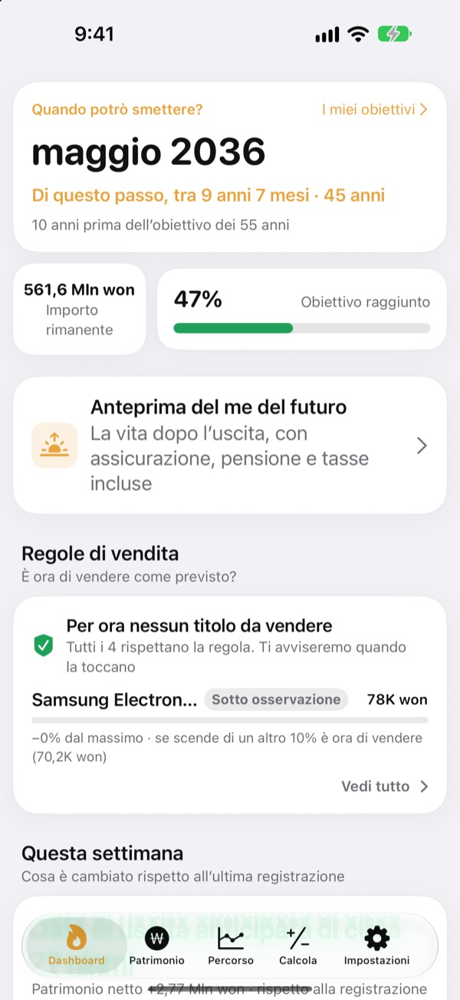
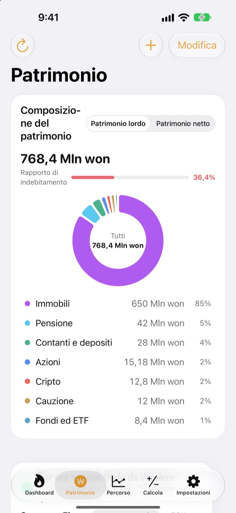
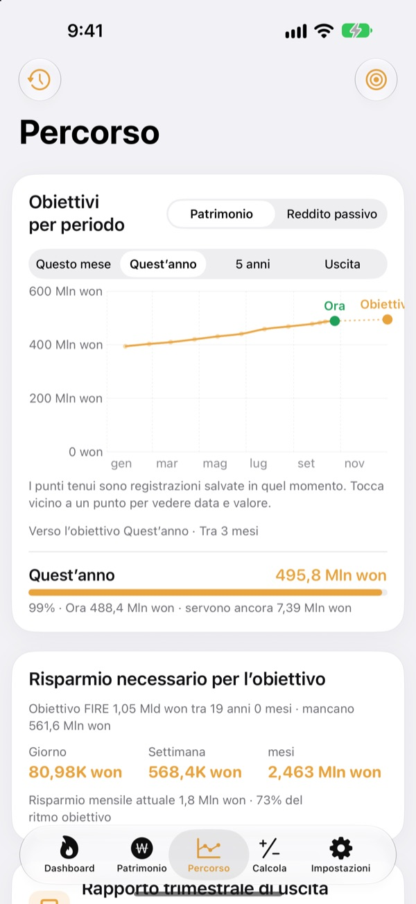
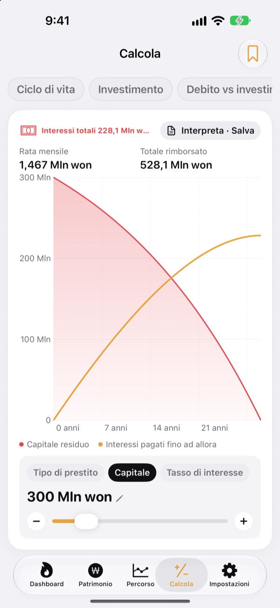

Quando puoi smettere?
Con i numeri, non a occhio.
Inserisci quanto spendi e quanto hai messo da parte e ottieni il mese in cui potresti dire basta. Ogni volta che il patrimonio cambia, vedi se quella data si avvicina o si allontana.
Nessun account. Le tue registrazioni restano sul dispositivo.

Trova la tua data di uscita
Sposta i cursori. È lo stesso calcolo che l’app fa nella prima schermata.
Fai ancora i conti a mente per capire se puoi smettere?
Quando conto corrente, conto titoli, fondo pensione e deposito cauzionale stanno ognuno per conto suo, anche il totale diventa confuso e la data di uscita resta un’ipotesi. Toesagak riunisce tutto in una schermata e ricalcola di continuo, da quel totale, il mese in cui potresti smettere.
Tutto il patrimonio in una schermata
Immobili, azioni, fondi ed ETF, pensioni, contanti e depositi, cauzioni, cripto e prestiti, raggruppati per tipo, con patrimonio totale, patrimonio netto e rapporto di indebitamento.
I prezzi di azioni e cripto vengono scaricati per tenere aggiornati i valori, e con uno screenshot dell’app del tuo broker importi titoli e valori in un colpo solo.

Quanto al giorno per arrivarci
Questo mese, quest’anno, cinque anni e la pensione come obiettivi, insieme alle registrazioni passate, in un solo grafico. Ti dice anche quanto mettere da parte al giorno, a settimana o al mese per restare in linea.
Quando il patrimonio cambia, la registrazione della settimana si salva da sola, così lo storico si costruisce senza sforzo.

Fai i conti prima delle grandi scelte
Calcolatori per l’andamento del patrimonio nel corso della vita, investimenti, estinguere debiti o investire, prestiti, depositi e risparmio, potere d’acquisto dello stipendio e soldi trasformati in ore. Sposta un valore e il grafico si ridisegna, con la curva precedente tratteggiata per confrontare.
Dai un nome alle impostazioni che usi spesso e salvale.

Si parte in tre passi
- 1
Inserisci spese ed età
Bastano cifre indicative. La data di uscita compare subito.
- 2
Aggiungi il tuo patrimonio
Più lo dettagli, più la data è precisa.
- 3
Dai un’occhiata ogni tanto
Le registrazioni settimanali si accumulano da sole e, se vuoi, l’app te lo ricorda il primo di ogni mese.
Come calcola l’app
- Obiettivo
- Un anno di spese dopo aver smesso ÷ tasso di prelievo sicuro (al 4%, 25 anni di spese)
- Data di uscita
- Il mese in cui il patrimonio netto, più quanto risparmi ogni mese, cresciuto al rendimento atteso, raggiunge l’obiettivo
- Patrimonio totale
- Tutto ciò che possiedi, sommato
- Patrimonio netto
- Patrimonio totale meno debiti come i prestiti
- Avanzamento
- Patrimonio netto ÷ obiettivo. Puoi seguirlo anche in base alla rendita passiva
- Cosa puoi cambiare
- Spesa mensile, tasso di prelievo dal 2 al 6%, rendimento atteso dallo 0 al 12%, l’età in cui vorresti smettere
Tutti i risultati sono calcoli indicativi basati sui dati inseriti e non costituiscono consulenza di investimento.
Domande
Dove vengono salvate le mie registrazioni?
Solo sul tuo dispositivo. Non serve iscriversi e nulla viene inviato allo sviluppatore. Attiva la sincronizzazione iCloud in Impostazioni per vedere le stesse registrazioni su iPhone e iPad tramite il tuo account iCloud.
I prezzi non si aggiornano.
Azioni statunitensi e coreane, cripto e tassi di cambio funzionano senza configurare nulla. Controlla la connessione a internet e che il ticker o il codice siano corretti. I prezzi degli appartamenti usano i dati immobiliari pubblici coreani e richiedono una chiave di servizio gratuita da inserire in Impostazioni.
Che differenza c’è tra patrimonio totale e patrimonio netto?
Il patrimonio totale è la somma di tutto ciò che possiedi. Il patrimonio netto è quella cifra meno i debiti come i prestiti. La data di uscita si basa sul patrimonio netto.
Come sposto le registrazioni su un nuovo dispositivo?
Usa Esporta in Impostazioni per creare un file di backup, conservalo in File, iCloud Drive o in un’email e poi ripristinalo sul nuovo dispositivo. I file di backup non contengono mai chiavi API. L’app conserva anche in automatico sul dispositivo i 20 backup più recenti.
Come funzionano gli avvisi di vendita?
Per ogni titolo imposta quanto può scendere dal massimo oppure un prezzo obiettivo. Quando supera quella soglia, ricevi un avviso. Mentre sale, resta in silenzio. I prezzi vengono controllati quando apri l’app e quando iOS lo consente in background (di solito ogni qualche ora), quindi non è un monitoraggio in tempo reale.
Posso tenere i miei numeri al riparo da occhi indiscreti?
Attiva il blocco app in Impostazioni per aprire l’app con Face ID o il codice. Con il blocco attivo, anche il promemoria mensile non mostra numeri.
Posso dare prima un’occhiata?
Attiva i dati demo in Impostazioni per esplorare tutte le schermate con il patrimonio di una persona fittizia. Disattivali e le tue registrazioni tornano subito. I dati demo non sono disponibili con la sincronizzazione iCloud attiva.
Come cancello tutti i miei dati?
Eliminando l’app si cancellano tutte le registrazioni salvate sul dispositivo. Se vuoi conservarne una copia, esporta prima un file di backup da Impostazioni.
Posso investire basandomi su questi numeri?
I risultati di Toesagak sono calcoli indicativi basati sui dati inseriti e su un rendimento ipotizzato. Non sono consulenza di investimento e i risultati reali dipendono dal mercato e dalla tua situazione.
Bug, idee o domande? Scrivi a leeo@kakao.com.